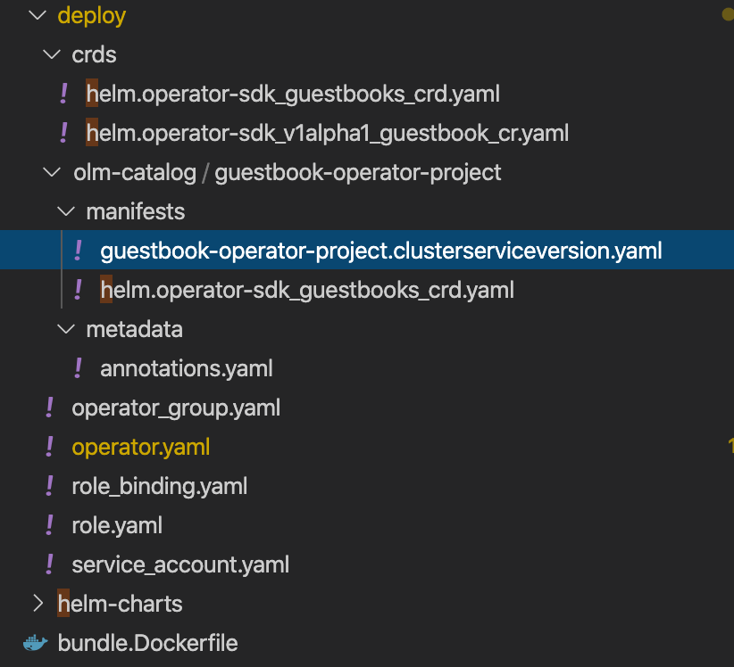

Create an Operator using an Existing Helm Chart¶
The Operator Framework is an open source project that provides developer and runtime Kubernetes tools, enabling you to accelerate the development of an Operator. The Operator SDK provides the tools to build, test and package Operators.
The following workflow is for a Helm operator using existing chart :
- Create a new operator project using the SDK Command Line Interface(CLI)
- Create a new (or add your existing) Helm chart for use by the operator’s reconciling logic
- Use the SDK CLI to build and generate the operator deployment manifests
- Optionally add additional CRD’s using the SDK CLI and repeat steps 2 and 3
- Use the SDK bundle feature to package the operator for OLM deployment.
- Deploy, test and publish.
In this lab, we will use the IBM Guestbook helm chart available here as the base to scaffold a new operator.
Information of creating a new operator can be found here
Setup¶
The lab requires you to have the operator-sdk installed. Login into the client CLI following these instructions. Run the command shown below to install the prerequisites:
source <(curl -s https://raw.githubusercontent.com/rojanjose/guestbook-helm-operator/master/scripts/operatorInstall.sh)
Check the command output to ensure the SDK version is correct.
...
Checking prereqs version ...
Go version:
go version go1.14.4 linux/amd64
-----------------------------
Helm version:
version.BuildInfo{Version:"v3.0.3", GitCommit:"ac925eb7279f4a6955df663a0128044a8a6b7593", GitTreeState:"clean", GoVersion:"go1.13.6"}
-----------------------------
Operator-sdk version:
operator-sdk version: "v0.19.2", commit: "4282ce9acdef6d7a1e9f90832db4dc5a212ae850", kubernetes version: "v1.18.2", go version: "go1.13.10 linux/amd64"
Log into your OpenShift cluster.
oc login --token=YQ2-mTJIWlz1gsWeI2tsO4CzHBbRSCQbH-IdA3tEFrM --server=https://c100-e.us-east.containers.cloud.ibm.com:32055
Create the operator¶
1. Create a new project¶
Export these environment variables prior to starting the project.
export DOCKER_USERNAME=<your-docker-username>
export OPERATOR_NAME=guestbook-operator
export OPERATOR_PROJECT=guestbook-operator-project
export OPERATOR_VERSION=v1.0.0
export IMG=docker.io/${DOCKER_USERNAME}/${OPERATOR_NAME}:${OPERATOR_VERSION}
Create a new project called guestbook-operator using the existing guestbook helm chart. The guestbook chart is available at the repo https://ibm.github.io/helm101/.
operator-sdk new $OPERATOR_PROJECT --type=helm --helm-chart=guestbook --helm-chart-repo=https://ibm.github.io/helm101/
cd $OPERATOR_PROJECT
Output:
INFO[0000] Creating new Helm operator 'guestbook-operator-project'.
INFO[0000] Created helm-charts/guestbook
INFO[0000] Generating RBAC rules
I0813 23:07:00.995286 11211 request.go:621] Throttling request took 1.031369076s, request: GET:https://c100-e.us-east.containers.cloud.ibm.com:31941/apis/scheduling.k8s.io/v1?timeout=32s
WARN[0002] The RBAC rules generated in deploy/role.yaml are based on the chart's default manifest. Some rules may be missing for resources that are only enabled with custom values, and some existing rules may be overly broad. Double check the rules generated in deploy/role.yaml to ensure they meet the operator's permission requirements.
INFO[0002] Created build/Dockerfile
INFO[0002] Created deploy/service_account.yaml
INFO[0002] Created deploy/role.yaml
INFO[0002] Created deploy/role_binding.yaml
INFO[0002] Created deploy/operator.yaml
INFO[0002] Created deploy/crds/helm.operator-sdk_v1alpha1_guestbook_cr.yaml
INFO[0002] Generated CustomResourceDefinition manifests.
INFO[0002] Project creation complete.

Review the code and customize the operator logic as required to obtain the desired results. By default, the Guestbook operator installs the configured helm chart watches the events shown in the watches.yaml.
- group: helm.operator-sdk
version: v1alpha1
kind: Guestbook
chart: helm-charts/guestbook
The custom resource (CR) file defines the properties used by operator while it creates an instance of the Guestbook application. These properties are derived from the values.yaml file in the Helm chart.
apiVersion: helm.operator-sdk/v1alpha1
kind: Guestbook
metadata:
name: example-guestbook
spec:
# Default values copied from <project_dir>/helm-charts/guestbook/values.yaml
image:
pullPolicy: Always
repository: ibmcom/guestbook
tag: v1
redis:
port: 6379
slaveEnabled: true
replicaCount: 2
service:
port: 3000
type: LoadBalancer
2. Deploy the CRD¶
Let Kubernetes know about the new custom resource definition (CRD) the operator will be watching.
oc create -f deploy/crds/helm.operator-sdk_guestbooks_crd.yaml
Verify the CRD install in OpenShift console:

Alternatively, query using the following CLI commands:
oc get crd guestbooks.helm.operator-sdk
oc describe crd guestbooks.helm.operator-sdk
3. Build the code¶
Use the generated Dockerfile under build directory for image build.
FROM quay.io/operator-framework/helm-operator:v0.19.2
COPY watches.yaml ${HOME}/watches.yaml
COPY helm-charts/ ${HOME}/helm-charts/
Run the operator sdk build command to build the image for the helm operator.
operator-sdk build ${IMG}
INFO[0000] Building OCI image docker.io/rojanjose/guestbook-operator:v1.0.0
Sending build context to Docker daemon 41.98kB
Step 1/3 : FROM quay.io/operator-framework/helm-operator:v0.19.2
v0.19.2: Pulling from operator-framework/helm-operator
41ae95b593e0: Pull complete
f20f68829d13: Pull complete
05c2e7d4212e: Pull complete
66213365a0c9: Pull complete
09e5a7e28c6f: Pull complete
Digest: sha256:0f1e104719267f687280d8640a6958c61510fae27a6937369c419b0dd2b91564
....
Verify the built image:
$ docker images
REPOSITORY TAG IMAGE ID CREATED SIZE
rojanjose/guestbook-operator v1.0.0 d05f5e2c441e 7 seconds ago 200MB
quay.io/operator-framework/helm-operator v0.19.2 11862329f28c 2 weeks ago 200MB
Log into the docker registry and push image:
docker login docker.io -u $DOCKER_USERNAME
docker push ${IMG}
Replace the image name string in the operator.yaml file:
sed -i 's|REPLACE_IMAGE|'${IMG}'|g' deploy/operator.yaml
(MacOS:)
sed -i "" 's|REPLACE_IMAGE|'${IMG}'|g' deploy/operator.yaml
At this stage, the operator can be deployed with the available manifest files, however, we will explore the operator deloy with OLM features.
4. Deploy the Operator with the Operator Lifecycle Manager (OLM)¶
Ensure OLM is enabled on the cluster by running this command:
operator-sdk olm status --olm-namespace openshift-operator-lifecycle-manager
Expected result:
operator-sdk olm status --olm-namespace openshift-operator-lifecycle-manager
I0813 23:36:41.881438 14844 request.go:621] Throttling request took 1.020925705s, request: GET:https://c100-e.us-east.containers.cloud.ibm.com:31941/apis/rbac.authorization.k8s.io/v1beta1?timeout=32s
INFO[0002] Fetching CRDs for version "0.13.0"
INFO[0002] Fetching resources for version "0.13.0"
INFO[0003] Successfully got OLM status for version "0.13.0"
NAME NAMESPACE KIND STATUS
installplans.operators.coreos.com CustomResourceDefinition Installed
clusterserviceversions.operators.coreos.com CustomResourceDefinition Installed
aggregate-olm-view ClusterRole Installed
operatorgroups.operators.coreos.com CustomResourceDefinition Installed
catalogsources.operators.coreos.com CustomResourceDefinition Installed
subscriptions.operators.coreos.com CustomResourceDefinition Installed
system:controller:operator-lifecycle-manager ClusterRole Installed
aggregate-olm-edit ClusterRole Installed
olm-operator-binding-olm ClusterRoleBinding clusterrolebindings.rbac.authorization.k8s.io "olm-operator-binding-olm" not found
olm-operator-serviceaccount olm ServiceAccount serviceaccounts "olm-operator-serviceaccount" not found
olm-operator olm Deployment deployments.apps "olm-operator" not found
catalog-operator olm Deployment deployments.apps "catalog-operator" not found
operators Namespace namespaces "operators" not found
olm Namespace namespaces "olm" not found
global-operators operators OperatorGroup operatorgroups.operators.coreos.com "global-operators" not found
olm-operators olm OperatorGroup operatorgroups.operators.coreos.com "olm-operators" not found
packageserver olm ClusterServiceVersion clusterserviceversions.operators.coreos.com "packageserver" not found
operatorhubio-catalog olm CatalogSource catalogsources.operators.coreos.com "operatorhubio-catalog" not found
[Note: OLM is partially enabled which is sufficient to complete this lab.]
Create a bundle:
operator-sdk generate bundle --version 1.0.0
Output of the command:
INFO[0000] Generating bundle manifests version 1.0.0
Display name for the operator (required):
> Guestbook Operator
Description for the operator (required):
> Demo helm operator for Guestbook
Provider's name for the operator (required):
> IBM
Any relevant URL for the provider name (optional):
> https://github.com/rojanjose/guestbook-helm-operator
Comma-separated list of keywords for your operator (required):
> helm,operator,kubernetes,openshift
Comma-separated list of maintainers and their emails (e.g. 'name1:email1, name2:email2') (required):
> Rojan:rojanjose@gmail.com
INFO[0164] Bundle manifests generated successfully in deploy/olm-catalog/guestbook-operator-project
INFO[0164] Building annotations.yaml
INFO[0164] Writing annotations.yaml in /Users/operator/guestbook-operator-project/deploy/olm-catalog/guestbook-operator-project/metadata
INFO[0164] Building Dockerfile
INFO[0164] Writing bundle.Dockerfile in /Users/operator/guestbook-operator-project
A bundle manifests directory deploy/olm-catalog/guestbook-operator-project/manifests containing a CSV and all CRDs in deploy/crds and a bundle metadata directory deploy/olm-catalog/guestbook-operator-project/metadata are generated.

Create Project where operator OLM should be installed:
oc new-project guest-operator-ns
Output:
Now using project "guest-operator-ns" on server "https://c100-e.us-east.containers.cloud.ibm.com:31941".
You can add applications to this project with the 'new-app' command. For example, try:
oc new-app django-psql-example
...
Create an OperatorGroup yaml definition:
cat <<EOF >>deploy/operator_group.yaml
apiVersion: operators.coreos.com/v1
kind: OperatorGroup
metadata:
name: guestbook-og
namespace: guest-operator-ns
spec:
targetNamespaces:
- guest-operator-ns
EOF
Replace placeholder string with project guest-operator-ns in
guestbook-operator.clusterserviceversion.yaml
sed -i 's#namespace: placeholder#namespace: guest-operator-ns#' deploy/olm-catalog/guestbook-operator-project/manifests/guestbook-operator-project.clusterserviceversion.yaml
or on Mac,
sed -i "" 's#namespace: placeholder#namespace: guest-operator-ns#' deploy/olm-catalog/guestbook-operator-project/manifests/guestbook-operator-project.clusterserviceversion.yaml
5. Install the operator¶
Create the Operator group:
oc create -f deploy/operator_group.yaml
Apply the Operator’s CSV manifest to the specified namespace in the cluster:
oc create -f deploy/olm-catalog/guestbook-operator-project/manifests/guestbook-operator-project.clusterserviceversion.yaml
Create the role, role binding, and service account to grant resource permissions to the Operator to create the Guestbook type that the Operator manages:
oc create -f deploy/service_account.yaml
oc create -f deploy/role.yaml
oc create -f deploy/role_binding.yaml
Wait for few minutes for the Guestbook operator to complete the installation.
oc get ClusterServiceVersion
ClusterServiceVersion should show a PHASE value of Succeeded,
$ oc get ClusterServiceVersion
NAME DISPLAY VERSION REPLACES PHASE
guestbook-operator-project.v1.0.0 Guestbook Operator 1.0.0 Succeeded
Check the list of Installed Operators under the project guest-operator-ns.

Open the operator and validate that install succeeded.

Now, create an instance of Guestbook helm chart. Click on Create instance icon.

Goto Workloads > Pods to view the pods. You should see 2 frontend pods, 1 Redis master, 2 Redis slave and pod supporting the Guestbook operator OLM.

6. Update the Guestbook application instance¶
Open the deploy/crds/helm.operator-sdk_v1alpha1_guestbook_cr.yaml and change the value of replicaCount to 4.

Save the file and run the oc apply command:
oc apply -f deploy/crds/helm.operator-sdk_v1alpha1_guestbook_cr.yaml
Run oc get pods to validate the guesbook pod count:
oc get podsNAME READY STATUS RESTARTS AGE
example-guestbook-6fdb6776b-hdq64 1/1 Running 0 41m
example-guestbook-6fdb6776b-pktr8 1/1 Running 0 8s
example-guestbook-6fdb6776b-x2nqw 1/1 Running 0 41m
example-guestbook-6fdb6776b-xz8lp 1/1 Running 0 77s
guestbook-operator-project-767cc5686c-ksmxq 1/1 Running 0 52m
redis-master-68857cd57c-pwctp 1/1 Running 0 41m
redis-slave-bbd8d8545-6jk8m 1/1 Running 0 41m
redis-slave-bbd8d8545-k65wz 1/1 Running 0 41m
7. Clean up¶
Run the oc delete commands to remove the operator.
oc delete -f deploy/crds/helm.operator-sdk_v1alpha1_guestbook_cr.yaml
oc delete -f deploy/service_account.yaml
oc delete -f deploy/role.yaml
oc delete -f deploy/role_binding.yaml
oc delete -f deploy/olm-catalog/guestbook-operator-project/manifests/guestbook-operator-project.clusterserviceversion.yaml
oc delete -f deploy/operator_group.yaml
oc delete -f deploy/crds/helm.operator-sdk_guestbooks_crd.yaml